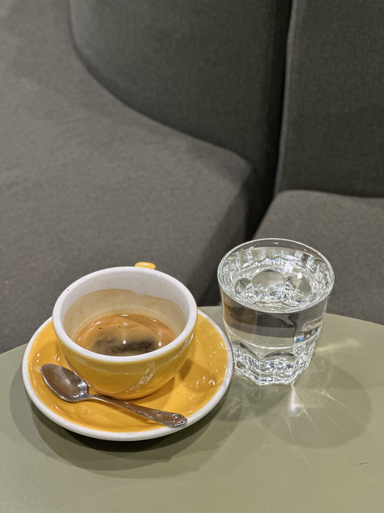
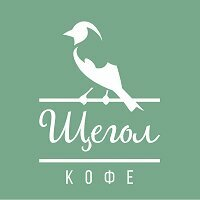
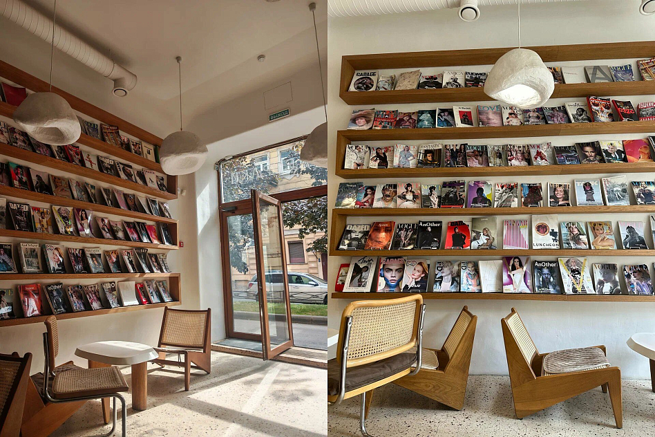
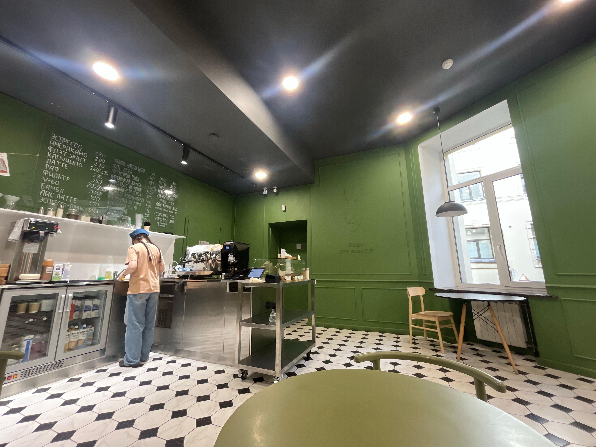
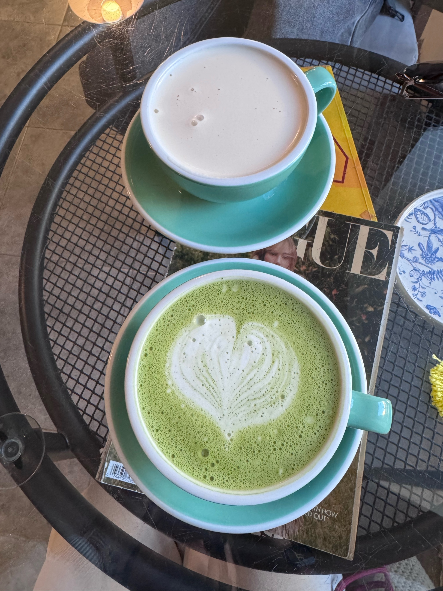

КофеЭспрессо
Классическая база кофейного меню.
200 ₽
Щегол ПозвонитьТри кофейни в Санкт-Петербурге
Щегол — кофейня с зелёным знаком, витриной десертов, завтраками, книгами и спокойным интерьером. Один адрес рядом с Технологическим институтом, второй — на Невском, внутри Буквоеда.
Щегол в трёх точках
Щегол — это не просто кофе по пути. Это место, где хочется задержаться: у окна, с завтраком, журналом и чашкой кофе, которая делает день спокойнее.

Журнальная атмосфера
В Щегле легко считывается характер: зелёный знак, тёплая витрина, растения, журналы, кофе и светлая посадка. На сайте это превращается в единый бренд, а не в набор разрозненных карточек на картах.
Фото
Два адреса, два настроения: фасад и журнальная посадка у Технологического института, книжный вид и зелёная барная зона на Невском.
Отзывы гостей
Отзывы собраны из открытых карточек и площадок. Для финального сайта тексты нужно сверить с владельцем или кабинетами площадок.
«Кофе вкусный, мягкий»; гости отдельно отмечают спокойную атмосферу и десерты.
январь«Хороший спешлти кофе» и свежие десерты — частый сценарий для встреч и работы.
январь«Гнёздышко за Буквоедом» — очень точный образ для филиала на Невском.
майКофе рядом с Буквоедом превращается в понятный городской ритуал.
ноябрьВ 2ГИС у Невского филиала высокая оценка и много фото гостей.
96 отзывов«Уютная и очень зелёная атмосфера» — формула, которую стоит держать на сайте.
архивный отзывВысокая оценка филиала и много отзывов про кофе, завтраки и атмосферу.
карточка филиалаНевский филиал воспринимается как кофейня при книжном маршруте.
карточка филиалаАдреса
Санкт-Петербург. Уютная точка с фасадом, журналами, завтраками, верандой и кофе с собой.

Санкт-Петербург. Кофейня внутри Буквоеда: книги, кофе, десерты и вид на центр города.

Санкт-Петербург. Третий филиал бренда по данным 2ГИС: кофе, десерты, завтраки и спокойная городская посадка.
Контакты
Выберите филиал, постройте маршрут или следите за новостями в соцсетях.
Карта
Переключайте карту между филиалами или открывайте маршрут в Яндекс Картах и 2ГИС.
Соцсети
Следить за новостями, меню и атмосферой